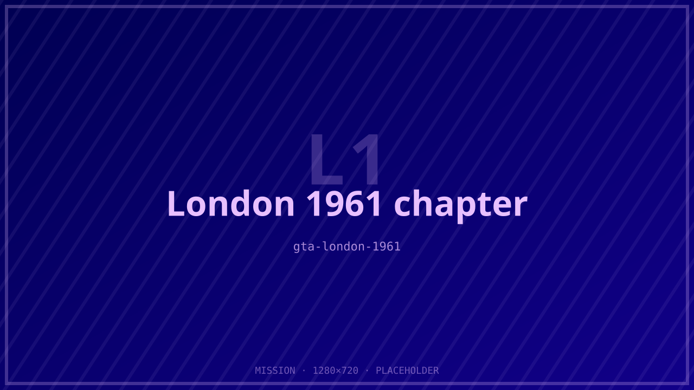

London 1961 · Mission
London 1961 chapter
Add-on campaign set in 1961 London with period vehicles and adjusted economy.

- type
- Story
- giver
- London firms
- location
- London
- other
- Score progression in pre-decimal currency
Verified record
London 1961 · Mission
Add-on campaign set in 1961 London with period vehicles and adjusted economy.

Verified record